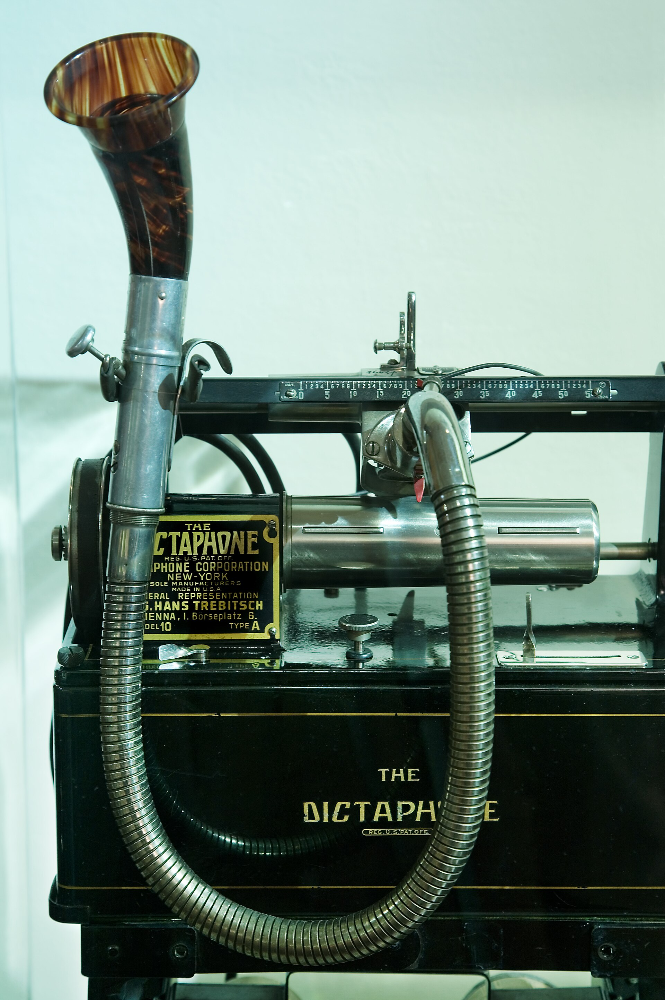
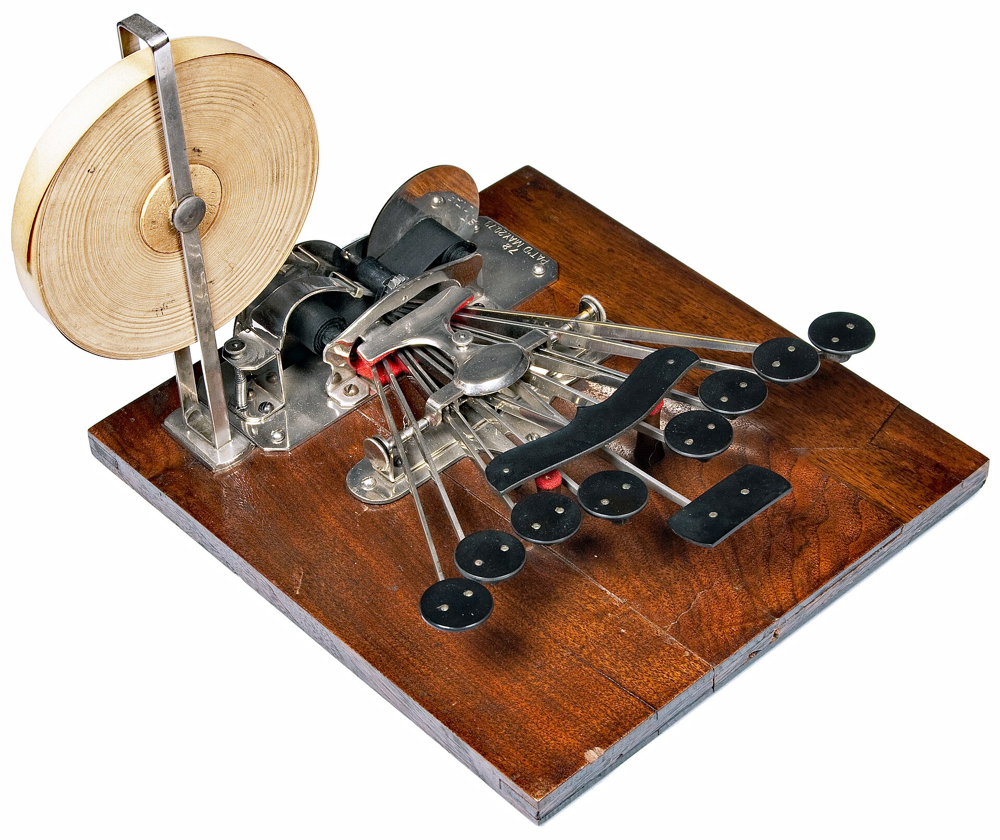

说话， 字就贴进那个框里。
Windows 上的开源语音输入。它删掉口头禅，合并重复，听懂你中途的改口，再按你打字的习惯排好版。
点一下那条悬浮条，它就在你面前演一遍：按一下开始，再按一下，字就进去了。
它删了什么，你看得见
下面三条都是真录音的原文和成品。换一条，切回原文，或者让它把删掉的部分划给你看。
那个，咱们晨会能不能，呃，改到九点？就是……啊不对，九点我其实不太行，那个，还是改到九点半吧。
咱们晨会能不能改到九点半？
你好小明，我换新号码了，是13812345678。哦对，小明是黄晓明的晓明。
你好，晓明，我换新号码了，是 138 1234 5678。
周五出门前先网上值机，然后收拾行李箱，再把停车位订了。停车位得先订，车位老是一下就没了。
周五出门前还有几件事：1. 先订机场停车位（得先订，车位老是一下就没了） 2. 提前网上值机 3. 收拾行李
录音
看哪一面
点右边的控件，左边立刻变。划掉的字就是它替你省掉的。
按两下
先按一下热键。
右 Alt。也可以是右 Ctrl、右 Shift、右 Win，设置里改。
然后随便说。
口头禅、改口、说两遍，都不用管。你想怎么说就怎么说。
再按一下，字就进去了。
1 到 3 秒后，整理好的那句贴进你刚才正在打字的框。说的还是说的，写的已经是写的。
记事本 · 会议.txt
咱们晨会能不能改到九点半？

它知道你在写什么
开口的那一刻，它读一眼你光标前面已经写好的字，最多 500 字，74 毫秒读完。所以在代码编辑器里它不给你加句号， 在邮件里它分成称呼、正文、落款，在聊天框里它就是一句话。读不到也不要紧，那时它按普通段落来。
老师您好，关于下周的例会，我想
读到光标前 18 字 · 74 毫秒 · 读完就用，不存盘
不用交出自己的话
没有账号，没有中间服务器，没有统计上报。key 用当前用户的 DPAPI 加密，只存在这台机器上； 请求直接发给你自己选的那家模型，中间没有我们。删掉下面这个目录，就干净了。
%USERPROFILE%\.draftless
data\Recordings\你的录音，只在这
data\history.db历史，只记长度不记内容
qwen-key.binDPAPI 加密，146 字节
logs\main.log只有耗时和字数
实测的数字
都是 2026-10-17 拿真实录音跑出来的，不是估的。没测过的写在最后一组。
速度
听写一条 33 秒的录音1.4–2.4 秒
加上整理，从说完到贴进去3–5 秒
读光标前的上下文74 毫秒
听写那一步产生的思考 token0
成本
一次听写（Qwen，33 秒录音）¥0.014
安装包178 MB
单测加安装测试784 + 6 全过
还没测的
本地模型在 Windows 上的速度和准确率没测过
管理员权限的窗口贴不进，字留在剪贴板

几个会先问到的
要花钱吗？
程序免费，MIT 许可。模型按用量付费，用你自己的 key。Qwen 国内直连、不用代理，一次听写几分钱； Gemini 有免费额度，但要能访问 Google。
贴不进去怎么办？
管理员权限的窗口，Windows 不允许低权限程序往里发按键。这种时候文字会留在剪贴板里， 它会提示你按 Ctrl+V。不会让你白说一遍。
说得又快又乱，能行吗？
它就是为这个做的。改口、重复、说到一半又推翻，这些都留在录音里，交给整理那一步。你只管把话说出来。
支持别的语言吗？
中英混说保持原样，界面中英双语。整理规则是照着中文口语调的，英文能用但没专门调过。
怎么装？
去 Releases 页面下载 Draftless-win32-x64.zip，解压，右键 install.ps1 用 PowerShell 运行。 不用管理员权限，不往系统目录写东西。升级只覆盖程序目录，你的设置和历史不动。
先接上模型
keysk-••••••••••••••••
key 用当前用户的 DPAPI 加密，只存在这台机器。第一次启动就是这一屏。